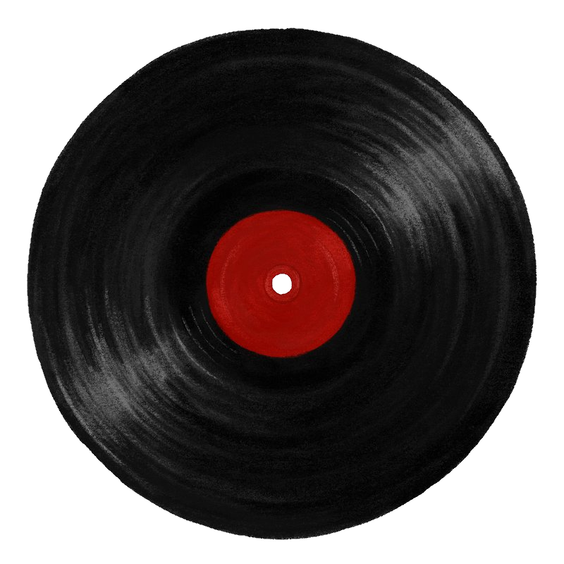

Atlas: Year One
Sleeping At Last
Overture
It starts with our eyes well acquainted with the dark
The mind was made to illuminate the heart
And when every constellation suddenly appeared
Through telescopes and calculations, the far was pulled so near
Even after everything we've seen
We've barely caught a glimpse of what it means
In the architecture of the soul
The universe began
With our eyes closed
We claim our land
We tame our seas
We carve our names
On the surface of history
'Til our hands get tied
By the stubborn will of gravity
Even after everything we've seen
We've barely caught a glimpse of what it means
In the architecture of the soul
The universe began
With our eyes closed
In the rise and fall
Of a newborn's chest
Like the ocean swells
We inhale, exhale and reset
Every living thing
Is in this constant state of unrest
Even after all our history
We've barely caught a glimpse of what it means
In the architecture of the soul
The universe began
Even after everything we've seen
We've barely caught a glimpse of what it means
In the architecture of the soul
The universe began
With our eyes closed
Woodwork
I hear your heart
As it beats beneath
The sound of crashing cars
As the sirens pour
Into every street surrounding us
Our world caves in on us
And makes us new
All our love came out of the woodwork
All our strength came out of the woodwork
We only notice light when darkness crashes against it
We only notice light deep in the woodwork
I still hear the song
As it rings beneath
The sound of shattered glass
In the aftermath
The melody, it carries on
While we come undone
It makes us new
All our love came out of the woodwork
All our strength came out of the woodwork
We only notice light when darkness crashes against it
We only notice light deep in the woodwork
It's a cruel, cruel trick
How we find ourselves
When we lose everything else
Like a train wreck
The sound of your breathing hits my ears
The world reappears
And it breaks us new
'Til all our love came out of the woodwork
All our strength came out of the woodwork
All our trust came out of the woodwork
We only notice light deep in the woodwork
I'll Keep You Safe
I'll keep you safe.
Try hard to concentrate.
Hold out your hand, can you feel the weight of it?
The whole world at your fingertips-
Don't be, don't be afraid.
Our mistakes, they were bound to be made.
but I promise you I'll keep you safe.
You'll be an architect,
so pull up your sleeves and build a new silhouette in the skylines up ahead.
Don't be, don't be afraid.
Our mistakes, they were bound to be made.
but I promise you I'll keep you safe.
I'll keep you safe.
Your darkness will be rewritten into a work of fiction, you'll see.
As you pull on every ribbon, you'll find every secret it keeps.
The sound of the branches breaking under your feet, the smell of the falling and burning of leaves, the bitterness of winter or the sweetness of spring,
You are an artist but your heart is your masterpiece.
And I'll keep it safe.
Dismiss the invisible by giving it shape,
like a clockmaker fixes time by keeping the gears in line.
Don't be, no don't be afraid.
God knows, our mistakes will be made.
but I promise you I'll keep you safe.
As you build up your collection
of pearls that you pulled from the deep,
a landscape more beautiful than anything that I've ever seen.
The sound of the branches breaking under your feet, the smell of the falling and burning of leaves, the bitterness of winter or the sweetness of spring,
You are an artist but your heart is your masterpiece.
And I'll keep it safe.
Bad Blood
You fixed your eyes on us
Your flesh and blood
A sculpture of water
And unsettled dust
When there was bad blood in us
We learned our lesson
Genesis to the last generation
So we wrestle with it all
The concept of grace
And the faithful concrete
As it breaks our fall
Our questions are all the same
Identical words, how they feel brand new against different time frames
Identical words against different time frames
We know it all by heart
The whole is greater
Than the sum of its parts
We've heard it all before
In beauty there echoes a speck of our source
In beauty there echoes a speck of our source
Like firewood
Burning bright
In the dead of winter
By only a flicker
We cling to this life
So we huddle over maps
Is it faith or prediction
Will or tradition
Until we collapse?
We argue our bearings
Until we collapse
We study our story arcs
Inherently good
Or were we broken right from the start?
Our hesitant fingerprints
Trace every mountain
Lace every valley
Until we're convinced
That we know it all by heart
Every blade of grass
Bears our mark
In the name of being brave
Though it's just another word for being afraid
We know it all by heart
The whole is so much greater
Than the sum of these parts
We've heard the truth before
For in beauty there echoes a speck of our source
In beauty there echoes a speck of our source
In beauty there echoes a speck of our source
Uneven Odds
I once knew your father well.
he fought tears as he spoke
of your mother's health.
I guess a part of him just couldn't return.
forgiveness is the lesson
he cursed you to learn.
As your guardian, I was instructed well
to make sense of God's love in these fires of hell.
Now I don't expect you to understand,
just to live what little life
your broken heart can.
Maybe your light is a seed,
and the darkness, the dirt.
in spite of the uneven odds
beauty lifts from the earth.
As the years move on
these questions take shape.
are you getting stronger
or is time shifting weight?
No one expects you to understand,
just to live what little life
your mended heart can.
You'll always remember
the moment God took her away,
for the weight of the world
was placed on your shoulders that day.
Maybe your light is a seed,
and the darkness, the dirt.
in spite of the uneven odds
beauty lifts from the earth.
You're much too young now
so I'll write these words down:
darkness exists
to make light truly count.
Light
May these words be the first to find your ears
The world is brighter than the sun now that you're here
Though your eyes will need some time to adjust
To the overwhelming light surrounding us
I'll give you everything I have
I'll teach you everything I know
I promise I'll do better
I will always hold you close
But I will learn to let you go
I promise I'll do better
I will soften every edge
I'll hold the world to its best
And I'll do better
With every heartbeat I have left
I will defend your every breath
And I'll do better
'Cause you are loved, you are loved more than you know
I hereby pledge all of my days to prove it so
Though your heart is far too young to realize
The unimaginable light you hold inside
I'll give you everything I have
I'll teach you everything I know
I promise I'll do better
I will always hold you close
But I will learn to let you go
I promise I'll do better
I will rearrange the stars
Pull 'em down to where you are
I promise I'll do better
With every heartbeat I have left
I'll defend your every breath
I promise I'll do better
I will soften every edge
Hold the world to its best
I promise I'll do better
With every heartbeat I have left
I'll defend your every breath
You Are Enough
When we woke up the world was figured out
Beyond the beauty we've dreamt about
This brilliant light is brighter than we've known
Without our darkness to prove it so
Still, we can't help but to examine it
To add our question marks to periods
At the foot of our bed, we found an envelope
You're enough, you're enough, you're enough, you are enough
These little words, somehow they're changing us
You're enough, you're enough, you are enough
So we let our shadows fall away like dust
When we grew up, our shadows grew up too
But they're just some old ghosts that we grew attached to
The tragic flaw is that they hide the truth
That you're enough, you're enough, you're enough
I promise you're enough, you're enough, you're enough
I promise you're enough, you're enough, you're enough
I promise you
You're enough, you're enough, you're enough, you are enough
These little words, somehow they're changing us
You're enough, you're enough, you are enough
So we let our shadows fall away like dust
You're enough, you're enough, you are enough
These little words, somehow they're changing us
Let it go, let it go, you are enough
So we let our shadows fall away like dust
Heirloom
You try your hardest to leave the past alone
This crooked posture is all you've ever known
It is the consequence of living in between
The weight of family and the pull of gravity
You are so much more than your father's son
You are so much more than what I've became
Long before you were born there was light
Hidden deep in these young, unfamiliar eyes
A million choices, though little on their own
Become the heirloom of the heaviness you've known
You are so much more than your father's son
You are so much more than what I've become
What I've become
What I've become
You pressed rewind
For the thousandth time
When the tapes wore through
So you memorized
Those unscripted lines
Desperate for some kind of clue
When the scale tipped
When you inherited
A fight that you were born to lose
It's not your fault
No, it's not your fault
I put this heavy heart in you
I put this heavy heart in you
You remind me of who I could have been
Had I been stronger and braver way back then
A million choices, though little on their own
Became the heirloom of the heaviness we've known
You are so much more than your father's son
You are so much more than the wars you've won
You are so much more than your father's son
You are so much more than what I've become
The Projectionist
When I was young, I fell in love with story
With the eleventh hour
With the blaze of glory
The theater lights dim and all goes quiet
In the darkest of rooms
Light shines the brightest
When hands are tied and clocks are ticking
An audience convinced: we're leaning in
Holding our breath again
Just when we thought the game was over
The music lifts and our dying soldier lives!
And we breathe a sigh of relief
We're leaving
We're leaving our shadows behind us now
Yeah, we're leaving
Yeah, we're leaving it all behind for now
But even dust was made to settle
And if we're made of dust
Then what makes us any different?
I guess we give what we've been given
A family tree so very good at giving up
When we've had enough
Though truth is heavier than fiction
Gravity lifts as the projectionist rolls tape
And it makes us brave again
And it makes us brave again
And it makes us brave
So we're leaving
We're leaving our shadows behind us now
Yeah, we're leaving
Yeah, we're leaving it all behind for now
And it makes us brave again
And it makes us brave yeah, we're leaving
(And it makes us brave again)
We're leaving 'em all behind for now
In The Embers
We live and we die like fireworks
Our legacies hide in the embers
May our stories catch fire
And burn bright enough to catch God’s eye
We live and we die
Like fireworks we pull apart the dark
Compete against the stars with
All of our hearts
’til our temporary brilliance turns to ash
We pull apart the darkness while we can
May we live and die a valorous life
May we write it all down in cursive light
So we pray we were made
In the image of a figure eight
May we live and die
Like fireworks we pull apart the dark
Compete against the stars with
All of our hearts
’til our temporary brilliance turns to ash
We pull apart the darkness while we can
Like fireworks we pull apart the dark
Compete against the stars with
All of our hearts
’til our temporary brilliance turns to ash
We pull apart the darkness while we can
Sun
With golden string
Our universe was clothed in light
Pulling at the seams
Our once barren world now brims with life
That we may fall in love
Every time we open up our eyes
I guess space and time
Takes violent things, angry things
And makes them kind
We are the dust of dust
We are the apple of God's eye
We are infinite as the universe we hold inside
Infinity times infinity
Infinity times infinity times infinity
Infinity times infinity times infinity times infinity
Let there be light, let there be light, let me be right
The dust of dust
We are the apple of God's eye
We are infinite as the universe we hold inside
We are the dust of dust
(Infinity times infinity)
We are the apple of God's eye
(Infinity times infinity times infinity)
We are infinite as the universe we hold inside
(Infinity times infinity, infinity times infinity, infinity times infinity times infinity)
Mercury
Rows of houses sound asleep.
Only street lights notice me.
I am desperate if nothing else.
In a holding pattern to find myself.
I talk in circles, I talk in circles.
I watch for signals, for a clue.
How to feel different, how to feel new.
Only street lights notice me.
Like science fiction bending truth.
No one can unring this bell.
Unsound this alarm, unbreak my heart new.
I watch for signals, for a clue.
God knows, I am dissonance.
Waiting to be swiftly pulled into tune.
I'll go anywhere you want, anywhere you want.
Anywhere you want me.
I'll go anywhere you want, anywhere you want.
Anywhere you want me.
I'll go anywhere you want, anywhere you want.
Anywhere you want me.
I'll go anywhere you want, anywhere you want.
Anywhere you want me.
I know the further I go.
The harder I try, only keeps my eyes closed.
And somehow I've fallen in love.
God knows, I am dissonance.
With this middle ground at the cost of my soul.
Yet I know, if I stepped aside.
Released the controls, you would open my eyes.
That somehow, all of this mess.
Is just my attempt to know the worth of my life.
Made of precious metals precious metals.
Precious metals inside.
Made of precious metals precious metals.
Precious metals inside.
Made of precious metals.
(I'll go anywhere you want. Anywhere you want)
Precious metals.
(I'll go anywhere you want. Anywhere you want)
Precious metals.
(I'll go anywhere you want. Anywhere you want)
Precious metals.
I'll go anywhere you want, anywhere you want.
(Precious metals).
Anywhere you want.
(Precious metals).
I'll go anywhere you want, anywhere you want.
Anywhere you want me.
Venus
The night sky once ruled my imagination
Now I turn the dials with careful calculation
After a while, I thought I'd never find you
I convinced myself that I would never find you
When suddenly, I saw you
At first, I thought you were a constellation
I made a map of your stars, then I had a revelation
You're as beautiful as endless
You're the universe I'm helpless in
An astronomer at my best
When I throw away the measurements
Like a telescope
I will pull you so close
'Til no space lies in between
And suddenly, I see you
Suddenly, I see you
I was a billion little pieces
'Til you pulled me into focus
Astronomy in reverse
It was me who was discovered
A billion little pieces (like a telescope)
You pulled me into focus (I will pull you so close)
Astronomy in reverse ('til no space lies in between)
It was me who was discovered
A billion little pieces (like a telescope)
You pulled me into focus (I will pull you so close)
Astronomy in reverse ('til no space lies in between)
It was me who was discovered
A billion little pieces (like a telescope)
You pulled me into focus (I will pull you so close)
Astronomy in reverse ('til no space lies in between)
Then suddenly, I see you
Suddenly, I see you
Earth
I dig till my shovel tells a secret
Swear to the earth that I will keep it
Brush off the dirt
And let my change of heart occur
Sold soon after the appraisal
The hammer struck the auction table
Louder than anything I've ever heard
Fault lines tremble underneath my glass house
But I put it out of my mind
Long enough to call it courage
To live without a lifeline
I bend the definition
Of faith to exonerate my blind eye
Till the sirens sound, I'm safe
Meanwhile, my family's taking shelter
The sparks send the fire down the wire
A countdown begins
Until the dynamite gives in
The echo, as wide as the equator
Travels through a world of built up anger
Too late to pull itself together now
Fault lines tremble underneath my glass house
But I put it out of my mind
Long enough to call it courage
To live without a lifeline
I bend the definition
Of faith to exonerate my blind eye
Till the sirens sound, I'm safe
There was an earthquake
There was an avalanche of change
We were so afraid
We cried ourselves a hurricane
There were floods
Tidal waves over us
So we folded our hands and prayed
Like a domino
These wildfires grow and grow
Until a brand new world takes shape
Fault lines tremble underneath my glass house
But I put it out of my mind
Long enough to call it courage
To live without a lifeline
I bend the definition
Of faith to exonerate my blind eye
Till the sirens sound, I'm safe
Until the sirens sound, I'm safe
Until the sirens sound, I'm safe
Mars
We laid our names to rest
Along the dotted line
We left our date of birth
And our history behind
We were full of life
We could barely hold it in
We were amateurs at war
Strangers to suffering
We made our families proud
But scared at the same time
We promised we'd be safe
Another lie from the front lines
Our backs against the wall
We're surrounded and afraid
Our lives now in the hands
Of the soldiers taking aim
Our questions ricochet
Like broken satellites
How our bodies, born to heal
Become so prone to die?
Though time is ruthless
It showed us kindness in the end
(By slowing down enough)
(A second chance to make amends)
As life replayed, we heard a voice proclaim
"Lay your weapons down
They're calling off the war
On account of losing track
Of what we're fighting for"
So we found our way back home
Let our cuts and bruises heal
While a brand-new war began
One that no one else could feel
Our nights have grown so long
Now we beg for sound advice
"Let the brokenness be felt
'Til you reach the other side
There is goodness in the heart
Of every broken man
Who comes right up to the edge
Of losing everything he has"
(Losing everything he has)
(Losing everything he has)
We were young enough to sign
Along the dotted line
(To build a better life)
(To build a better life)
Now we're young enough to try
To build a better life
To build a better life
Jupiter
I wrote it down in the winter of 1610
Just a secret under lock and key until then
While collecting the stars, I connected the dots
I don't know who I am, but now I know who I'm not
I'm just a curious speck that got caught up in orbit
In orbit
Like a magnet it beckoned my metals toward it, toward it
Make my messes matter
Make this chaos count
Let every little fracture in me
Shatter out loud
Make my messes matter
Make this chaos count
Let every little fracture in me
Shatter out loud
Saturn
You taught me the courage of stars before you left.
How light carries on endlessly, even after death.
With shortness of breath.
You explained the infinite.
How rare and beautiful it is to even exist.
I couldn't help but ask for you to say it all again.
I tried to write it down, but I could never find a pen.
I'd give anything to hear you say it one more time.
That the universe was made just to be seen by my eyes.
I couldn't help but ask for you to say it all again.
I tried to write it down, but I could never find a pen.
I'd give anything to hear you say it one more time.
That the universe was made just to be seen by my eyes.
With shortness of breath.
I'll explained the infinite.
How rare and beautiful it truly is that we exist.
Neptune
Pitch black, pale blue
There was a stained-glass, variation of the truth
And I felt empty-handed
You let me set sail with cheap wood
So I patched up every leak that I could
'Til the blame grew too heavy
Stitch by stitch, I tear apart
If brokenness is a form of art
I must be a poster child prodigy
Thread by thread, I come apart
If brokenness is a work of art
Surely this must be my masterpiece
I'm only honest when it rains
If I time it right, the thunder breaks
When I open my mouth
I wanna tell you, but I don't know how
I'm only honest when it rains
An open book, with a torn out page
And my inks run out
I wanna love you but I don't know how
I don't know how
No, I don't know how
I don't know how
I wanna love you but I don't know how
I don't know how
I wanna love you but I don't know how
I wanna love you but I don't know how
I wanna love you
Pitch black, pale blue
These wild oceans shake what's left of me loose
Just to hear me cry mercy
The strong wind at my back
So I'll lift up the only sail that I have
This tired white flag
(White flag)
I'm only honest when it rains
If I time it right, the thunder breaks
When I open my mouth
I wanna tell you but I don't know how
I'm only honest when it rains
An open book, with a torn out page
And my inks run out
I wanna love you but I don't know how
Know how
I'm only honest when it rains
If I time it right, the thunder breaks
When I open my mouth
I wanna tell you but I don't know how
Know how
I'm only honest when it rains
An open book, with a torn out page
And my inks run out
I wanna love you but I don't know how
I don't know how
I don't know how
I don't know how
I wanna love you but I don't know how
I don't know how
I wanna love you but I don't know how
I wanna love you but I don't know how
I wanna love you
Pluto
I woke up from the same dream
Falling backwards, falling backwards
Till it turned me inside out
Now I live a waking life
Of looking backwards, looking backwards
A model citizen of doubt
Until one day I had enough
Of this exercise of trust
I leaned in and let it hurt
And let my body feel the dirt
When I break pattern, I break ground
I rebuild when I break down
I wake up more awake than
I've ever been before
Still I'm pinned under the weight
Of what I believed would keep me safe
So show me where my armor ends
Show me where my skin begins
Like a final puzzle piece
It all makes perfect sense to me
The heaviness that I hold in
My heart belongs to gravity
The heaviness that I hold in
My heart's been crushing me
I've been worried all my life
A nervous wreck most of the time
I've always been afraid of heights
Of falling backwards, falling backwards
I've been worried all my life
I've been worried, I've been worried
I've been worried all my life
I've been worried, I've been worried
I've been worried all my life
Falling backwards, falling backwards
Falling backwards, falling backwards
Falling backwards, falling backwards
'Til one day I had enough
Of this exercise of trust
I leaned in and let it hurt
Let my body feel the dirt
When I break pattern, I break ground
I rebuild when I break down
I wake up more awake than
I've ever been before
Still I'm pinned under the weight
Of what I believed would keep me safe
So show me where my armor ends
Show me where my skin begins
Like a final puzzle piece
It all makes perfect sense to me
The heaviness that I hold in
My heart belongs to gravity
The heaviness in my heart belongs to gravity
North
We will call this place our home
The dirt in which our roots may grow
Though the storms will push and pull
We will call this place our home
We’ll tell our stories on these walls
Every year, measure how tall
And just like a work of art
We’ll tell our stories on these walls
Let the years we’re here be kind, be kind
Let our hearts, like doors, open wide
Open wide
Settle our bones like wood over time
Over time
Give us bread, give us salt, give us wine
A little broken, a little new
We are the impact and the glue
Capable of more than we know
We call this fixer upper home
With each year, our color fades
Slowly, our paint chips away
But we will find the strength
And the nerve it takes
To repaint and repaint and repaint every day
Let the years we’re here be kind, be kind
Let our hearts, like doors, open wide
Open wide
Settle our bones like wood over time
Over time
Give us bread, give us salt, give us wine
Let the years we’re here be kind, be kind
Let our hearts, like doors, open wide
Open wide
Settle our bones like wood over time
Over time
Give us bread, give us salt, give us wine
Give us bread, give us salt, give us wine
Smaller than dust on this map
Lies the greatest thing we have:
The dirt in which our roots may grow
And the right to call it home
East
I set out to rule the world
With only a paper shield and a wooden sword
No mountain dare stand in my way
Even the oceans tremble in my wake
The tide is brave, but always retreats
Even the sand, it cowers under my feet
My kingdom towers above it all
While I sleep safe and sound in my cardboard walls
Now I bear little resemblance to the king I once was
I bear little resemblance to the king I could become
Maybe paper is paper, maybe kids will be kids
Lord, I want to remember how to feel like I did
So I draw my sword with the morning sun
I summon the moon as soon as the day is done
The clouds march on, on my command
Even the rain, it falls according to plan
The trees bow down and give their leaves
I humbly accept their offerings of peace
The years wore on and changed my heart
The leading role for a smaller part
Now I bear little resemblance to the king I once was
I bear little resemblance to the king I could become
Maybe paper is paper, maybe kids will be kids
But Lord, I want to remember how to feel like I did
'Cause I bear little resemblance to the king I once was
I bear little resemblance to the king I could become
Maybe paper is paper, maybe kids will be kids
But Lord, I want to remember how to feel like I did
I set out to rule the world
With only a paper shield and a wooden sword
South
Some truths, over time, can learn to play nice
Some truths are sharper than knives
Some truths we only see in the corners of our eyes
Some truths we wish we could hide
Some truths can save us
Some take our lives
Some truths are fire
And some truths are ice
No matter what category you fit into
Truth's got its sight set on you
If truth is north
Then I am true south
I can't figure it out
God knows
Always looking up
'Til my eyes give up
That's how I lost touch
Of who I am and who I was
Some truths were sewn into our DNA
Some truths unravel and fray
Some truths keep growing taller than giants
Some truths take our breath away
Some truths get tired
The longer we wait
Well, some truths get tired
The longer we wait
If truth is north
Then I am true south
I can't figure it out
God knows
I'm always looking up
'Til my eyes give up
That's how I lost touch
Of who I was
If truth is north
Then I am true south
I can't figure it out
God knows I've tried
Always looking up
'Til my eyes give up
That's how I lost touch
Of who I am and who I was
Some truths are gentle, forgiving and kind
Some truths are hard to define
Some truths are crooked, with rough edges too
But some truths wear like comfortable shoes
Some truths are loyal
As the shadows we lead
Some truths are stubborn as gravity
No matter what category you fit into
Truth's got its sight set on you
West
Maps stretched out
Too many miles to count
Let's just say we're inches apart
And even closer at heart
And we'll be just fine
Another pin pushed in
To remind us where we've been
And every mile adds up
And leaves a mark on us
And sometimes our compass breaks
And our steady true north fades
We'll be just fine
We'll be just fine
We'll be just fine
We'll be just fine
I know that we will
I just know you will
Time moves slow
When half of your heart has yet to come home.
Every minute's adding up
And leaving a mark on us
I can't get you out of my mind
I can't get you out of my mind
I can't get you out of my mind
I solemnly swear
I swear that i'll never try
We'll be just fine
We'll be just fine
We'll be just fine
And I know that we will
We'll be just fine
We'll be just fine
It's a matter of time
'Til our compass stands still
'Til our compass stands still


Tracklist
Darkness & Light EPs
- Overture
- Woodwork
- I'll Keep You Safe
- Bad Blood
- Uneven Odds
- Light
- You Are Enough
- Heirloom
- The Projectionist
- In the Embers